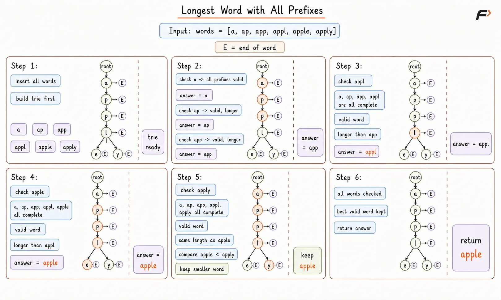

Longest Word with All Prefixes
Given an array of lowercase strings, find the longest string such that all of its prefixes are also present in the array as complete strings.
If more than one valid string has the same maximum length, return the lexicographically smallest one.
If no such string exists, return None.
A prefix means the starting part of a string. For example, the prefixes of ninja are n, ni, nin, ninj, and ninja.
Example 1
Input: words = ["n", "ni", "nin", "ninj", "ninja", "ninga"]
Output: ninja
Explanation: ninja is valid because n, ni, nin, and ninj are all present. ninga is not valid because ning is missing.
Example 2
Input: words = ["a", "ap", "app", "appl", "apple", "apply"]
Output: apple
Explanation: Both apple and apply have all prefixes present, but apple is lexicographically smaller.
Approach
The small observation is this: a word is valid only if every step while walking through its characters lands on a node that already marks the end of a word. That means a trie can do two useful jobs at once. First, it stores all words in shared prefix form. Second, while checking a word, it can confirm whether each prefix on that path is already a complete word. So instead of building prefixes again and again as separate strings, the trie lets the check happen directly on the character path.
Algorithm
First, insert all words into a trie. This is done so every word and every shared prefix can be checked by simply moving along trie nodes instead of building new prefix strings again and again.
While inserting a word, mark only its last node as
end of word. This is important because the problem does not ask whether a prefix path exists. It asks whether that prefix is itself a complete word in the array.After building the trie, pick one word at a time and walk through it character by character. This direct walk helps check all prefixes of that word in one pass.
At each character, move to the matching child node. If that child does not exist, the current prefix is missing, so this word must be rejected immediately.
Even if the child node exists, check whether that node is marked as
end of word. This step matters because a prefix may exist as part of some longer word, but it still does not count unless that prefix was inserted as a full word.If the full word passes every prefix check, compare it with the current best answer. This comparison is needed because more than one valid word can exist.
Replace the current answer when the new word is longer, because the problem asks for the longest valid word.
If both valid words have the same length, keep the lexicographically smaller one, because that is the required tie-break rule.
After all words are checked, return the stored answer. If no valid word was ever accepted, return
None.
Key Points
The word itself must also be present in the array, because the final trie node must be marked as a complete word too.
If no single-letter word exists, many larger words will fail immediately because their first prefix is missing.
The lexicographical tie-break matters only when two valid words have the same length.
Dry Run

Longest Word with All Prefixes Dry Run
Solution
#include <bits/stdc++.h>
using namespace std;
class TrieNode {
public:
vector<TrieNode*> children;
bool isEndOfWord;
TrieNode() {
children.assign(26, nullptr);
isEndOfWord = false;
}
};
class Solution {
private:
void insertWord(TrieNode* root, const string& word) {
TrieNode* node = root;
for (char ch : word) {
// Convert the current character into a trie index from 0 to 25.
int index = ch - 'a';
// Create the next node only when this character path is new.
if (node->children[index] == nullptr) {
node->children[index] = new TrieNode();
}
// Move forward so the next character is attached after this one.
node = node->children[index];
}
// Mark the full word so this path counts as a valid complete prefix later.
node->isEndOfWord = true;
}
bool hasAllPrefixes(TrieNode* root, const string& word) {
TrieNode* node = root;
for (char ch : word) {
int index = ch - 'a';
// If the path breaks, this prefix does not exist.
if (node->children[index] == nullptr) {
return false;
}
node = node->children[index];
// Every step must end at a complete word, not just a path.
if (!node->isEndOfWord) {
return false;
}
}
return true;
}
public:
/*
Returns the longest word whose every prefix
is also present in the given list of words.
*/
string longestWordWithAllPrefixes(vector<string>& words) {
TrieNode* root = new TrieNode();
// Store every word first so prefix checks can be done by walking the trie.
for (const string& word : words) {
insertWord(root, word);
}
// Keep the best valid answer found so far.
string answer = "";
for (const string& word : words) {
// Only words whose every prefix is complete can compete for the answer.
if (hasAllPrefixes(root, word)) {
// Prefer longer words, and for equal length prefer smaller dictionary order.
if (word.length() > answer.length() ||
(word.length() == answer.length() && word < answer)) {
answer = word;
}
}
}
// If no valid word exists, return None.
return answer.empty() ? "None" : answer;
}
};
// Driver code starts
int main() {
vector<string> words = {"a", "ap", "app", "appl", "apple", "apply"};
Solution obj;
cout << obj.longestWordWithAllPrefixes(words) << endl;
return 0;
}Complexity Analysis
Time Complexity: O(N x L), where N is the number of words and L is the average length of a word. Insertion processes each character once, and validation also processes each character once.
Space Complexity: O(N x L x 26) Where N x L represents the maximum possible number of nodes created across all words in the worst case (when no words share prefixes), 26 for lowercase English letters. Every Trie node statically allocates an array of 26 child pointers (or references) regardless of how many actual children are active, contributing a constant multiplier of 26 to the memory footprint.
Interview follow-up Questions
A trie stores words by shared prefixes. That makes it very easy to walk through a word and verify that every prefix is present as a complete word.